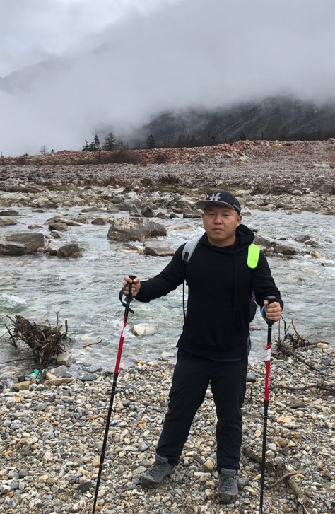

|  |
I'm currently a full-time Research Development Engineer With 3 years work experience. Before that I received my master degree(Computer Scienct and Technology) from Nanjing University in 2017. For technologies, I'm interested in Android, Audio and Video technology, Machine Learning, OpenGL, FFmpeg, Flutter and etc. For Programming Languages, I'm interested in Java > Kotlin > Python > C/C++ |